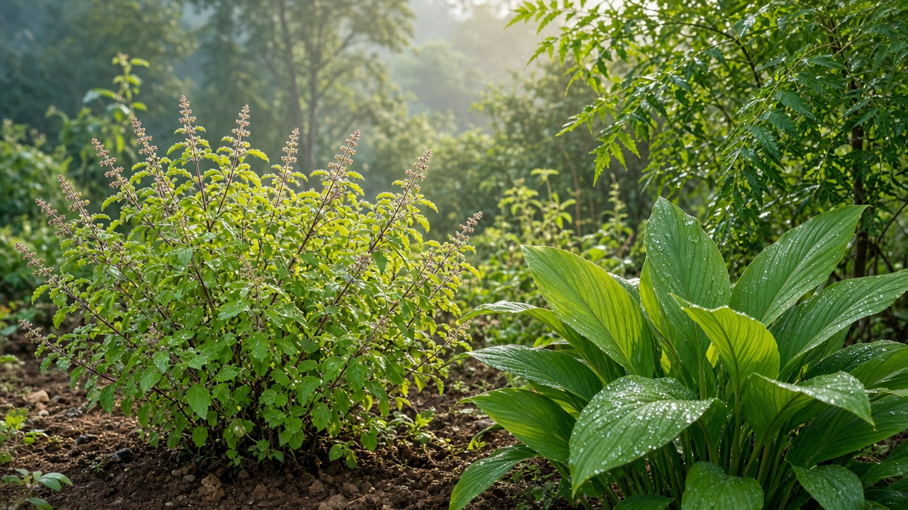
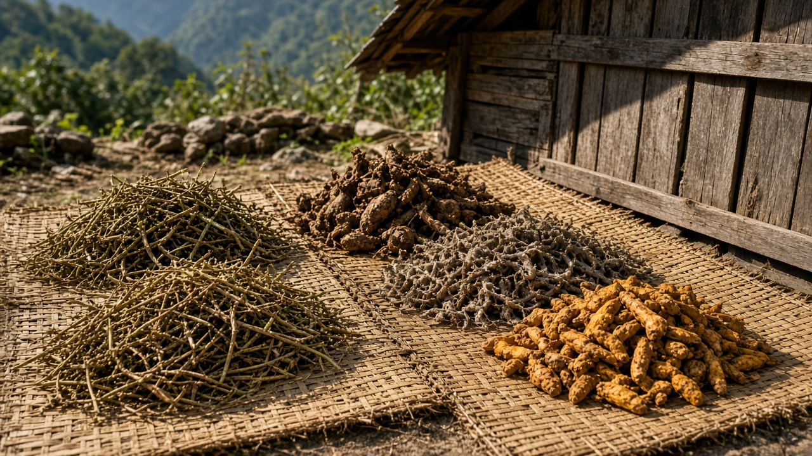
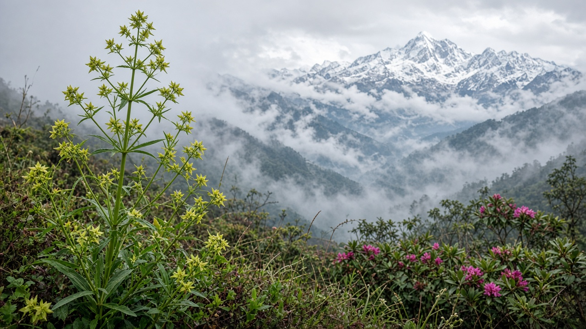

Plants with Medicinal Value Found in Nepal
Published on August 13, 2026

Nepal’s dramatic elevation gradient—from subtropical Terai plains to alpine Himalayan zones—supports one of the richest collections of medicinal plants in South Asia. For centuries, Ayurvedic healers, Amchi practitioners of Tibetan medicine, and village elders have relied on roots, bark, leaves, flowers, and resins gathered from forests, grasslands, and cultivated gardens. These plants treat digestive disorders, respiratory illness, skin conditions, fever, pain, and many other ailments. Nepal’s Department of Plant Resources and numerous ethnobotanical surveys have documented well over seven hundred species with reported medicinal uses, reflecting the deep connection between local health traditions and biodiversity.
Medicinal plants are economically and culturally vital. Herbs such as chiraito, kutki, jatamansi, yarsagumba, and panch aunle support rural livelihoods through domestic trade and export, while everyday species like turmeric, ginger, garlic, tulsi, and neem remain household remedies across the country. However, rising commercial demand, habitat loss, and unsustainable wild harvesting threaten many populations. Several high-value Himalayan species are now protected or restricted under Nepal’s Forest Act and international agreements. Sustainable use requires cultivation, fair trade, community forest management, and respect for traditional knowledge holders.
Learning about Nepal’s medicinal flora helps students, researchers, and conservationists appreciate why forest protection matters for public health as well as ecology. The list below names more than one hundred plants commonly reported from Nepal with medicinal value. Scientific identification, proper dosage, and professional medical guidance are essential before any plant is used as medicine. Protecting these species ensures that Nepal’s healing heritage and biodiversity can benefit present and future generations alike.

तराईका उपोष्णकटिबन्धीय मैदानदेखि हिमाली क्षेत्रसम्मको नेपालको उचाइ भिन्नताले दक्षिण एसियाकै सबैभन्दा समृद्ध औषधीय बिरुवा संग्रहहरू मध्ये एक समेट्छ। शताब्दीयौँदेखि आयुर्वेद चिकित्सक, अम्ची र गाउँका ज्ञानीहरूले वन, घाँसेमैदान र बगैंचाबाट जरा, बोक्रा, पात, फूल र राल संकलन गरी उपचार गर्दै आएका छन्। यी बिरुवाले पचन विकार, श्वासप्रश्वास रोग, छाला सम्बन्धी समस्या, ज्वरो, दुखाइ र अन्य धेरै रोगमा प्रयोग हुन्छ। नेपाल सरकारका वनस्पति स्रोत विभाग र वनस्पति-सांस्कृतिक सर्वेक्षणहरूले सात सयभन्दा बढी औषधीय प्रयोग रिपोर्ट भएका प्रजाति दर्ता गरेका छन्।
औषधीय बिरुवा आर्थिक र सांस्कृतिक रूपमा अत्यन्त महत्त्वपूर्ण छन्। चिरायता, कुटकी, जटामासी, यार्सागुम्बा र पञ्च औंला जस्ता जडीबुटीले ग्रामीण जीविकालाई समर्थन गर्छ, भने बेसार, अदुवा, लसुन, तुलसी र नीम जस्ता दैनिक प्रजाति घर-घरमा प्रयोग हुन्छन्। तर बढ्दो व्यापारिक माग, वासस्थान विनाश र दिगो नहुने जंगली संकलनले धेरै प्रजातिलाई खतरामा पारेको छ। उच्च मूल्यका हिमाली प्रजातिहरू नेपालको वन ऐन र अन्तर्राष्ट्रिय सम्झौता अन्तर्गत सुरक्षित वा प्रतिबन्धित छन्। दिगो उपयोगका लागि खेती, निष्पक्ष व्यापार, सामुदायिक वन व्यवस्थापन र परम्परागत ज्ञानको सम्मान आवश्यक छ।
नेपालका औषधीय वनस्पति बुझ्नु विद्यार्थी, अनुसन्धानकर्ता र संरक्षणवादीहरूलाई वन संरक्षण सार्वजनिक स्वास्थ्यका लागि पनि किन महत्त्वपूर्ण छ भन्ने कुरा बुझ्न मद्दत गर्छ। तलको सूचीमा नेपालमा औषधीय मूल्य रिपोर्ट भएका एक सयभन्दा बढी बिरुवाका नाम छन्। औषधिक रूपमा प्रयोग गर्नु अघि वैज्ञानिक पहिचान, उचित मात्रा र चिकित्सकीय मार्गदर्शन अपरिहार्य छ। यी प्रजाति संरक्षण गर्दा नेपालको उपचार परम्परा र जैविक विविधता हाल र भावी पुस्तालाई लाभ पुर्याउन सक्छ।

तराई के उपोष्णकटिबंधीय मैदानों से हिमाली क्षेत्रों तक—नेपाल की ऊँचाई विविधता दक्षिण एशिया के सबसे समृद्ध औषधीय पौधों के संग्रहों में से एक बनाती है। सदियों से आयुर्वेद चिकित्सक, अम्ची और गाँव के ज्ञानी लोग जंगल, घास के मैदान और बगीचों से जड़, छाल, पत्ते, फूल और राल इकट्ठा कर उपचार करते रहे हैं। ये पौधे पचन विकार, श्वसन रोग, त्वचा संबंधी समस्याएँ, बुखार, दर्द और कई अन्य बीमारियों में प्रयुक्त होते हैं। नेपाल सरकार के वनस्पति संसाधन विभाग और वनस्पति-सांस्कृतिक सर्वेक्षणों ने सात सौ से अधिक औषधीय उपयोग वाली प्रजातियाँ दर्ज की हैं।
औषधीय पौधे आर्थिक और सांस्कृतिक रूप से अत्यंत महत्वपूर्ण हैं। चिरायता, कुटकी, जटामांसी, यार्सागुम्बा और पंच औंले जैसी जड़ी-बूटियाँ ग्रामीण आजीविका का समर्थन करती हैं, जबकि हल्दी, अदरक, लहसुन, तुलसी और नीम जैसी दैनिक प्रजातियाँ घर-घर में प्रयुक्त होती हैं। फिर भी बढ़ती व्यापारिक मांग, आवास विनाश और असतत जंगली संग्रह ने कई प्रजातियों को खतरे में डाल दिया है। उच्च मूल्य वाली हिमाली प्रजातियाँ नेपाल के वन अधिनियम और अंतर्राष्ट्रीय समझौतों के तहत संरक्षित या प्रतिबंधित हैं। टिकाऊ उपयोग के लिए खेती, निष्पक्ष व्यापार, सामुदायिक वन प्रबंधन और पारंपरिक ज्ञान का सम्मान आवश्यक है।
नेपाल की औषधीय वनस्पति को समझना छात्रों, शोधकर्ताओं और संरक्षणवादियों को यह समझने में मदद करता है कि वन संरक्षण सार्वजनिक स्वास्थ्य के लिए भी क्यों महत्वपूर्ण है। नीचे की सूची में नेपाल में औषधीय मूल्य रिपोर्ट किए गए एक सौ से अधिक पौधों के नाम हैं। औषधि के रूप में उपयोग से पहले वैज्ञानिक पहचान, उचित मात्रा और चिकित्सकीय मार्गदर्शन अनिवार्य है। इन प्रजातियों की रक्षा नेपाल की उपचार परंपरा और जैव विविधता को वर्तमान और भावी पीढ़ियों को लाभ पहुँचा सकती है।
Medicinal Plants Found in Nepal (210+ species)
- Acorus calamus (Sweet flag / Bojho)
- Aconitum ferox (Monkshood / Bikh)
- Aconitum spicatum (Nepalese aconite)
- Adhatoda vasica (Malabar nut / Asuro)
- Aloe vera (Ghritkumari)
- Allium sativum (Garlic / Lasun)
- Andrographis paniculata (King of bitters / Kiratatikta)
- Artemisia vulgaris (Mugwort / Titepati)
- Asparagus racemosus (Wild asparagus / Kurilo)
- Azadirachta indica (Neem / Neem)
- Azima tetracantha (Fire plant)
- Bauhinia variegata (Orchid tree / Koiralo)
- Berberis aristata (Indian barberry / Chutro)
- Bergenia ciliata (Pashanbheda)
- Boerhavia diffusa (Punarnava / Punarnava)
- Bombax ceiba (Silk cotton tree / Semal)
- Butea monosperma (Flame of the forest / Palash)
- Calotropis gigantea (Crown flower / Ark)
- Cassia fistula (Golden shower / Amaltas)
- Centella asiatica (Gotu kola / Ghodtapre)
- Cinnamomum tamala (Indian bay leaf / Tejpat)
- Cinnamomum zeylanicum (Cinnamon / Dalchini)
- Clerodendrum indicum (Glory bower)
- Coleus barbatus (Patharchur)
- Convolvulus pluricaulis (Shankhapushpi)
- Cordyceps sinensis (Yarsagumba / Yarchagumba)
- Costus speciosus (Spiral flag / Keukand)
- Crataeva nurvala (Varuna)
- Curcuma longa (Turmeric / Besar)
- Dactylorhiza hatagirea (Panch aunle)
- Datura stramonium (Jimsonweed / Dhatura)
- Desmodium gangeticum (Shalaparni)
- Eclipta prostrata (False daisy / Bhringraj)
- Embelia ribes (False black pepper / Bairi)
- Emblica officinalis (Indian gooseberry / Amala)
- Euphorbia hirta (Asthma plant / Dudhe jhar)
- Ficus benghalensis (Banyan / Bar)
- Ficus religiosa (Peepal / Peepal)
- Garcinia pedunculata (Amlavetasa)
- Glycyrrhiza glabra (Licorice / Mulethi)
- Hedychium spicatum (Spiked ginger lily / Kapoor kachri)
- Helicteres isora (Indian screw tree / Marorphali)
- Heracleum nepalense (Cow parsnip / Chiraito family)
- Hippophae rhamnoides (Sea buckthorn / Titepati amilo)
- Holarrhena antidysenterica (Kurchi / Kurchi)
- Inula racemosa (Pushkarmool)
- Jatropha curcas (Physic nut / Rato jhar)
- Lawsonia inermis (Henna / Mehndi)
- Litsea cubeba (May chang)
- Mallotus philippensis (Kamala tree / Kamala)
- Mentha spicata (Spearmint / Pudina)
- Mesua ferrea (Ironwood / Nagkesar)
- Michelia champaca (Champak / Champ)
- Mimosa pudica (Touch-me-not / Lajjalu)
- Moringa oleifera (Drumstick tree / Sahjan)
- Morus alba (Mulberry / Kimbu)
- Myrica esculenta (Bayberry / Kaphal)
- Myristica fragrans (Nutmeg / Jaiphal)
- Nardostachys grandiflora (Spikenard / Jatamansi)
- Nelumbo nucifera (Lotus / Kamal)
- Neopicrorhiza scrophulariiflora (Kutki variant)
- Ocimum sanctum (Holy basil / Tulsi)
- Ocimum tenuiflorum (Sacred basil / Tulsi)
- Operculina turpethum (Indian jalap / Nisodh)
- Oroxylum indicum (Midnight horror / Tatelo)
- Pandanus odoratissimus (Kewra / Kevara)
- Parmelia nepalensis (Stone flower / Chharila)
- Phyllanthus emblica (Amla / Amala)
- Phyllanthus niruri (Stonebreaker / Bhui amala)
- Picrorhiza kurroa (Kutki)
- Picrorhiza scrophulariiflora (Kutki)
- Piper betle (Betel vine / Paan)
- Piper longum (Long pepper / Pipla)
- Plantago major (Plantain / Isabgol related)
- Plumbago zeylanica (Leadwort / Chitrak)
- Podophyllum hexandrum (Himalayan mayapple / Hathaja)
- Polygonatum cirrhifolium (Mahameda)
- Polygonatum verticillatum (King Solomon’s seal)
- Pterocarpus marsupium (Indian kino tree / Bijasal)
- Punica granatum (Pomegranate / Anar)
- Rauvolfia serpentina (Indian snakeroot / Sarpagandha)
- Rheum australe (Himalayan rhubarb / Padmachal)
- Rheum nobile (Noble rhubarb / Nable rhubarb)
- Rhodiola rosea (Golden root / Loth salla)
- Rhodiola imbricata (Himalayan rhodiola)
- Rhododendron anthopogon (Sunpati)
- Ricinus communis (Castor / Ander)
- Rosa centifolia (Cabbage rose / Gulab)
- Rubia cordifolia (Indian madder / Manjistha)
- Saussurea costus (Costus / Kuth)
- Saussurea gossypiphora (Kasturi kamal)
- Semecarpus anacardium (Marking nut / Bhallataka)
- Sesamum indicum (Sesame / Til)
- Shorea robusta (Sal tree / Sakhu)
- Smilax china (Chobchini)
- Solanum nigrum (Black nightshade / Kakamachi)
- Strychnos nux-vomica (Strychnine tree / Kuchila)
- Swertia chirayita (Chiraito)
- Symplocos racemosa (Lodh tree / Lodhra)
- Syzygium cumini (Jamun / Jamun)
- Taxus wallichiana (Himalayan yew / Loth salla)
- Terminalia arjuna (Arjuna tree / Arjuna)
- Terminalia bellirica (Beleric myrobalan / Barro)
- Terminalia chebula (Chebulic myrobalan / Harro)
- Thymus linearis (Himalayan thyme / Ban ajwain)
- Tinospora cordifolia (Giloy / Gurjo)
- Tribulus terrestris (Puncture vine / Gokharu)
- Trigonella foenum-graecum (Fenugreek / Methi)
- Urtica dioica (Stinging nettle / Sisnu)
- Valeriana hardwickii (Indian valerian)
- Valeriana jatamansi (Indian valerian / Sugandhwal)
- Viscum album (Mistletoe / Ainla)
- Vitex negundo (Five-leaved chaste tree / Nirgundi)
- Withania somnifera (Ashwagandha / Ashwagandha)
- Zanthoxylum armatum (Nepalese pepper / Timur)
- Zingiber officinale (Ginger / Aduwa)
- Abies spectabilis (Himalayan fir / Talispatra)
- Achyranthes aspera (Prickly chaff flower / Apamarga)
- Aegle marmelos (Bael tree / Bel)
- Albizia lebbeck (Siris tree / Siris)
- Allium cepa (Onion / Pyaj)
- Alstonia scholaris (Devil's tree / Chhatim)
- Amaranthus spinosus (Spiny amaranth / Latte jhar)
- Arisaema jacquemontii (Cobra lily / Hath pa)
- Atropa acuminata (Indian belladonna / Bikhma)
- Bacopa monnieri (Water hyssop / Brahmi)
- Betula utilis (Himalayan birch / Bhojpatra)
- Caesalpinia decapetala (Thorny creeper / Ainre khursani)
- Callicarpa macrophylla (Beautyberry / Panch phool)
- Carica papaya (Papaya / Mewa)
- Carissa carandas (Karonda / Karamarda)
- Carum carvi (Caraway / Jwano)
- Cassia occidentalis (Coffee senna / Kasmardi)
- Cassia tora (Sickle senna / Chakramarda)
- Cedrus deodara (Deodar cedar / Devdar)
- Celastrus paniculatus (Staff tree / Jyotishmati)
- Chlorophytum tuberosum (Safed musli)
- Cinnamomum glaucescens (Sugandha kokila)
- Cissampelos pareira (Velvet leaf / Patha)
- Cissus quadrangularis (Veldt grape / Hadjod)
- Clitoria ternatea (Butterfly pea / Aparajita)
- Commiphora wightii (Indian bdellium / Guggul)
- Coriandrum sativum (Coriander / Dhaniya)
- Crotalaria juncea (Sunn hemp / San)
- Cyperus rotundus (Nut grass / Nagarmotha)
- Cynodon dactylon (Bermuda grass / Dubo)
- Daphne bholua (Nepalese paper plant / Lokta)
- Dioscorea deltoidea (Wild yam / Giunth)
- Elaeocarpus sphaericus (Rudraksha tree / Rudraksha)
- Ephedra gerardiana (Joint pine / Somlata)
- Erythrina variegata (Indian coral tree / Parijat)
- Euphorbia neriifolia (Hedge euphorbia / Sehund)
- Ferula assa-foetida (Asafoetida plant / Hing)
- Ficus auriculata (Roxburgh fig / Timila)
- Foeniculum vulgare (Fennel / Saunf)
- Gmelina arborea (White teak / Gambhari)
- Gymnema sylvestre (Gurmar / Madhunashini)
- Hedychium coronarium (White ginger lily / Dudh kewra)
- Hemidesmus indicus (Indian sarsaparilla / Sariva)
- Hibiscus rosa-sinensis (Hibiscus / Japa pushpa)
- Hyoscyamus niger (Henbane / Khursani jhar)
- Illicium griffithii (Star anise / Star anise)
- Ipomoea digitata (Elephant foot yam / Vridhadaru)
- Juniperus recurva (Himalayan juniper / Dhupi)
- Kaempferia galanga (Lesser galangal / Kachur)
- Kalanchoe pinnata (Life plant / Patharkuchi)
- Leea macrophylla (Hastichandra)
- Lepidium sativum (Garden cress / Chamsur)
- Leucas aspera (Common leucas / Guma)
- Mangifera indica (Mango / Aam)
- Mucuna pruriens (Velvet bean / Kaucho)
- Murraya koenigii (Curry leaf / Curry patta)
- Nymphaea nouchali (Blue water lily / Kamal)
- Ocimum basilicum (Sweet basil / Babari)
- Panax pseudoginseng (Himalayan ginseng / Rukh katus)
- Papaver somniferum (Opium poppy / Aphim)
- Paris polyphylla (Satuvaa)
- Paederia foetida (Skunk vine / Gandali)
- Persea americana (Avocado / Avocado)
- Pinus roxburghii (Chir pine / Salla)
- Pinus wallichiana (Blue pine / Gobre salla)
- Piper nigrum (Black pepper / Marich)
- Plantago ovata (Psyllium / Isabgol)
- Pongamia pinnata (Indian beech / Karanj)
- Populus ciliata (Himalayan poplar / Poplar)
- Prinsepia utilis (Himalayan cherry / Dharma)
- Prunus cerasoides (Wild Himalayan cherry / Painyu)
- Psidium guajava (Guava / Amba)
- Pueraria tuberosa (Indian kudzu / Vidarikand)
- Quercus lanata (Woolly oak / Oak)
- Rhus parviflora (Sumac / Bhakimlo)
- Rubus ellipticus (Golden evergreen raspberry / Aiselu)
- Rumex nepalensis (Nepalese dock / Halhal)
- Saccharum officinarum (Sugarcane / Ukh)
- Santalum album (Sandalwood / Chandan)
- Sapindus mukorossi (Soap nut tree / Ritha)
- Saraca asoca (Ashoka tree / Ashoka)
- Sesbania grandiflora (Agati / Agati)
- Sida cordifolia (Country mallow / Bala)
- Solanum surattense (Yellow-berried nightshade / Kantakari)
- Solanum xanthocarpum (Yellow-fruit nightshade / Bihidang)
- Spilanthes acmella (Toothache plant / Akarkara)
- Spondias pinnata (Hog plum / Lapsi)
- Swertia angustifolia (Chiraito relative / Chiraito)
- Terminalia alata (Asna)
- Terminalia tomentosa (Asna / Asna)
- Thalictrum foliolosum (Mamira)
- Trichosanthes dioica (Pointed gourd / Parbal)
- Uraria picta (Prishnaparni)
- Verbascum thapsus (Mullein / Gajar puchhar)
- Viola biflora (Himalayan violet / Banphool)
- Woodfordia fruticosa (Fire-flame bush / Dhayaro)
- Xanthium strumarium (Cocklebur / Bhangre jhar)
- Ziziphus mauritiana (Indian jujube / Bayar)